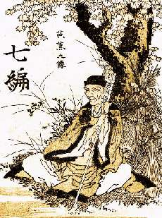

Борис Акунин
Мой календарь
Это ЮНЕСКО так решило: что день весеннего равноденствия будет отмечаться как Всемирный день поэзии.
Давайте отметим его и мы, всякий по-своему. Потому что восприятие стихов - дело сугубо индивидуальное. Что для одного слезы на глазах и укол в сердце, для другого - зевок, а то и кручение пальцем у виска.
Я думаю, что в суждениях о поэзии можно и даже нужно быть категоричным, ибо тут эмоциональное и личное.
Поэтому буду категоричен, вы со мной не согласитесь, и это правильно.
С моей точки зрения, традиционная западная поэзия - не вполне поэзия. Европейское стихотворение излагает какую-то мысль, или описывает чувство, или даже рассказывает некую историю. Суть любого, даже самого великого произведения, в сущности, можно изложить прозой.
Кроме того, западное стихотворение всегда монологично. Есть творец, он сочинил поэтический текст, читатель ахнул: «Как верно! А как волшебно составлены слова, прямо музыка!».
Настоящая поэзия - японская. Потому что она интерактивна. В лучших своих образцах она лишь высекает искру, а свет и тепло возникают уже в душе читателя - если он восприимчив к прекрасному и достаточно подготовлен. «Мчатся тучи, вьются тучи, невидимкою луна» - это просто красивое описание снежной бури.
А Мацуо Басё написал:
Автор дает тебе пас, что хочешь с мячом, то и делай. Чем ты наполнишь эту рамку из 31 слога, твое дело. Сиди и думай, прислушивайся к себе - отзовется твоя душа или нет. У меня отзывается. Причем в разном возрасте по-разному.
Сегодня все садимся и пишем хокку. Такой уж это день.